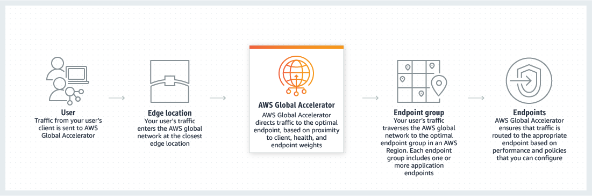

Slides: 15-slides-p337-351.pdf (full PDF p337-351). Page reference PDF p. 359 (part p. 8) = page 359 of the full slide PDF = page 8 of this section's PDF part; click to open the PDF at that page.
Loop: note → PDF part → exam points → Part A → Part B → mistakes again after 2 days.
Age ek nojore
CloudFront (CDN) ar Global Accelerator: user ke AWS er edge diye taratari app e ana
Section 12-14 e S3 shikhecho, Section 8 e ALB/NLB, Section 10 e Route 53. Ei section er prosno ekta: shara prithibir user ke kivabe kom latency te serve korbo? Duita service, duitai AWS er edge location use kore: CloudFront content ke edge e cache kore (HTTP, CDN), ar Global Accelerator kono cache kore na, shudhu packet ke edge theke AWS er private network diye tomar app e niye jay (TCP/UDP, 2 ta static Anycast IP). Exam e "CDN / static content globally / OAC / geo restriction / invalidation" ba "UDP, static IP, fast regional failover" dekhlei ei section.
Shohoj kore (mishti er dokan): Tomar main factory (origin) Australia te. America-r customer protibar Australia theke mishti anle deri hobe. Tai America te ekta chhoto dokan (edge location) khulle: prothom customer elo, dokan factory theke ene dilo ar kichu stock rekhe dilo (cache). Porer customer der dokan theke-i dey, factory porjonto jete hoy na. Stock koto din rakhbe = TTL. Ei dokan er network-tai CloudFront.
Content Delivery Network (CDN). Exam e "CDN" dekhlei CloudFront.
Website er content edge location e cache kore → read performance barhe, user der latency kome, user experience bhalo.
Lecture: 216 Points of Presence (edge location) globally; slide bole "Hundreds of PoPs". AWS location barachhe (ekhon koto: "Course er por ki bodlalo" dekho).
Content shara prithibi te chhoriye thake bole DDoS protection pao; sathe AWS Shield ar AWS WAF integration (Section 26 e detail).
CloudFront global service: console e region select nai (Lecture 2).
Example: S3 bucket Australia te, user America te
User 1America→Edge locationAmerica, cache e nai→ fetchS3 bucketAustralia
User 2America→Edge locationcache hit✓ Australia te jay na
Ek region er bucket er content edge diye shara prithibi te distribute hoy.
S3 origin with OAC
UserSao Paulo→ public wwwEdgeSao Paulo→ private AWS + OACS3 bucketbucket policy: shudhu ei distribution
User→ direct S3 URLS3 bucket✗ Access Denied
CloudFront vs S3 Cross-Region Replication (PDF p. 342(part p. 6))
CloudFront
S3 Cross-Region Replication (CRR)
Network
Global edge network (sob edge location)
Protiti region er jonno alada setup (sob region na, kichu region)
Freshness
File TTL porjonto cache (hoyto 1 din)
File near real-time update, kono caching nai
Access
Cache theke serve
Read only (replica)
Best for
Static content ja sob jaygay lagbe
Dynamic content ja kom latency te kichu region e lagbe
Ek kothay
CDN: content cache kore
Puro bucket onno region e replicate
Exam: "CDN", "content globally kom latency + high transfer speed" → CloudFront (B1-Q16, B1-Q64). "S3 er content shudhu CloudFront diye, direct S3 na" → OAC (ba purono OAI) + bucket policy; IAM role / security group / bucket public na (U15-Q2, S4-Q64, S6-Q54, B4-Q5). Origin hote pare: S3, EC2 (NGINX), on-premises HTTP server; Glacier na (B3-Q61). "Static content shob jaygay" → CloudFront; "dynamic content kichu region e near real-time" → S3 CRR. "Backend EC2 ke DDoS theke bachao" → CloudFront (B4-Q23).
Lecture 2 · CloudFront with S3 - Hands On · PDF p. 341(part p. 5)
Hands-on: private S3 bucket + CloudFront distribution + OAC
Shohoj kore: Bucket public korbo na. CloudFront ke ekta "ID card" (OAC) dibo, ar bucket er darowan (bucket policy) ke bolbo "shudhu ei ID card wala ke dhukte dao". User CloudFront er domain diye file pabe, direct S3 URL e Access Denied.
Object URL e gele Access Denied (object public na). Console er "Open" button ekta pre-signed URL banay (Section 14), tai shudhu oi file dekha jay; image public na bole dekhay na.
CloudFront console: global service, region select nai. Origin domain e S3 bucket (ba ELB, ba je kono custom HTTP domain).
Origin access er 3 option: Public (bucket public lagbe), Origin access control (OAC) = recommended, OAI = purono (legacy) upay.
"Create control setting" diye OAC banao.
WAF security protection lecture e disable (demo te dorkar nai).
Default root object = index.html.
Distribution create korle CloudFront bole bucket policy update korte hobe → copy policy → bucket → Permissions → Bucket policy e paste. (Harale: Origins → Edit e abar policy pao.)
Distribution "Deployed" hole CloudFront domain name diye open: text + image sob dekha jay.
Exam: Policy te Principal cloudfront.amazonaws.com + Condition AWS:SourceArn = distribution ARN → "S3 content shudhu oi CloudFront distribution theke access" (U15-Q3). "Encrypt force" ba "anybody GetObject" na. Console e OAC recommended, OAI legacy.
Subtitle e "platform service / platform cache / platform distribution" = CloudFront service / cache / distribution (speech-to-text bhul), thik kore likhechi.
Lecture 3 · CloudFront - ALB as an Origin · PDF p. 343-344(part p. 7-8)
ALB ba EC2 origin: VPC Origin (private) vs public network (security group rule)
Shohoj kore: CloudFront er edge location tomar VPC er baire thake. Tai edge ke tomar server e dhukte dite hobe. Duita rasta: (1) VPC Origin: AWS ekta private door banay, server private subnet e-i thake. (2) Public network: server (ba ALB) ke public koro, ar security group e "shudhu CloudFront er edge IP gulo dhukte parbe" rule dao.
Subtitle (purono recording) bole "CloudFront e kono private VPC connectivity nai, tai EC2 public hote hobe". Eta VPC Origins ashar age er kotha. Slide (p. 343) notun: private origin possible. Exam e duita pattern-i chino.
EC2 must be public (edge private VPC te dhukte pare na)
EC2 er SG: edge location er public IP allow
ALB as origin
ALB must be public; backend EC2 private hote pare (ALB ↔ EC2 private VPC connection)
ALB er SG: edge location er public IP allow. EC2 er SG: ALB er security group allow
ALB origin, public network
Users→Edge locationpublic IPs→ SG: edge IP allowALBmust be public→ SG: ALB SG allowEC2 instancescan be private
Edge IP er list AWS publish kore (slide er link: d7uri8nf7uskq.cloudfront.net/tools/list-cloudfront-ips).
amar jana, course e nai Haate IP list maintain na kore AWS-managed prefix list com.amazonaws.global.cloudfront.origin-facing SG rule e dewa jay (link "Course er por ki bodlalo" e).
Exam: "CloudFront → ALB/EC2, SG te ki allow" → CloudFront edge location er public IP (ba managed prefix list); EC2 behind ALB → EC2 SG te ALB er SG. "Origin private subnet e rakhte chai" → VPC origin. CloudFront distribution e security group attach kora jay na (U15-Q1 er distractor). "Website EC2 fleet e, load beshi, slow" → CloudFront (custom origin) + ElastiCache (B4-Q59). "ELB + EC2 diye boro static file, network cost beshi, refactor chara" → CloudFront distribution (S4-Q21). Kintu "highly dynamic content, 10x traffic" → Auto Scaling Group, CloudFront na (S4-Q53).
Lecture 4 · CloudFront - Geo Restriction · PDF p. 345(part p. 9)
Geo Restriction: country onujayi allow / block
Shohoj kore: Cinema hall er gate e passport dekhe dhukano: "shudhu US ar India er lok" (allowlist) ba "ei deshgulo bade sobai" (blocklist). User er IP dekhe desh ber kora hoy.
Type
Ki kore
Allowlist
Shudhu approved country list er user access pabe; baki sob block
Blocklist
Banned country list er user access pabe na; baki sob allowed
"Country" thik kora hoy 3rd party Geo-IP database diye (user er IP → country).
Use case: copyright law (distribution rights shudhu kichu deshe).
Console: distribution → Security tab → CloudFront geographic restrictions → Countries → Edit. Lecture e allowlist: India + United States.
Lecture 5 · CloudFront - Price Classes · v49 slide e ei page nai (lecture er table + diagram)
Price Classes: kom edge location = kom cost
Shohoj kore: Shob deshe dokan rakhle shob deshe bhara dite hoy, ar kichu desh e bhara beshi. Jodi tomar customer shudhu US ar Europe e, tahole shudhu shosta deshe dokan rakho: Price Class 100.
Edge location er data out cost region onujayi alada. Lecture er table er example: Mexico/US/Canada te prothom 10 TB $0.085/GB; India te prai dui gun $0.17/GB; 5 PB er beshi transfer korle US e $0.02/GB (beshi data = per GB kom).
Tai edge location er sonkha komiye cost reduction kora jay.
Price class
Edge location
Performance / cost
Price Class All
Sob region
Best performance, sobcheye beshi cost
Price Class 200
Beshir bhag region, sobcheye dami region bad
Majhamajhi
Price Class 100
Shudhu least expensive region: lecture diagram e North America + Europe
Sobcheye kom cost
AWS docs, course e nai AWS CDK docs: Price Class 100 = USA, Canada, Europe, Israel; Price Class 200 = 100 + Japan, India, Singapore, Middle East, South Africa ityadi (onek Asia/Africa desh); All = sob location. PriceClass (AWS CDK docs)
AWS docs, course e nai Excluded region er kache user ekhono content pay, shudhu latency beshi hote pare.
Exam: "User shudhu US + Europe, CloudFront cost komao" → Price Class 100 / "CloudFront Price Classes" (U15-Q5). Invalidation, cache behavior, OAC na. "Price Class All" = best performance, beshi cost.
Lecture 6 · CloudFront - Cache Invalidation · PDF p. 346(part p. 10)
Cache Invalidation: TTL er age notun content dekhano
Shohoj kore: Dokan e purono stock (cache) ache, expiry 1 din (TTL). Factory te notun recipe holo. Expiry porjonto wait na kore tumi sob dokan ke bolo "ei item gulo fele dao" = invalidation. Porer customer ashle dokan factory theke notun ta ane.
Exam: "Cache 3 din, notun version ekhuni production e" → CloudFront Cache Invalidation (U15-Q4); support ticket ba "EC2 cache invalidation" na. "Commonly requested object-o protibar origin hit kore" → Cache-Control max-age khub kom (B6-Q44); file size ba SSL na.
Course e nai · CloudFront private content, field-level encryption, regional edge cache (practice question test kore)
Signed URL / Signed Cookie, Field-level encryption, Regional edge cache
Shohoj kore: OAC bole "S3 shudhu CloudFront ke dibe". Kintu CloudFront nije kon user ke dibe? Paying subscriber ke ekta somoy-bandha ticket dao: ekta file er ticket = signed URL, puro section er pass = signed cookie.
course e nai v49 slide ar lecture e eta nai; source official AWS docs.
Signed URL vs Signed Cookie
Signed URL
Signed Cookie
Kokhon
Individual file (e.g. ekta installation download)
Onek restricted file (e.g. HLS video er sob file, subscriber area er sob file)
Client
Cookie support kore na emon client (custom HTTP client)
Browser (cookie support)
URL
URL bodlay (query string e signature)
Current URL bodlate chao na
Duitai thakle
Signed URL precedence pay
-
Source: Decide to use signed URLs or signed cookies. Section 14 er S3 pre-signed URL alada jinish: S3 object e direct temporary access; CloudFront signed URL = CloudFront distribution er content e access.
Field-level encryption
User er sensitive data (credit card, DOB) edge e, user er kache-i encrypt hoy, ar puro application stack e encrypted thake.
Distribution e bolo POST request er kon field encrypt hobe + kon public key. Ek request e max 10 field; puro request na, nirdishto field.
Asymmetric (public key encryption): CloudFront er kache shudhu public key; decrypt korte pare shudhu private key wala component (e.g. payment processing system).
Viewer protocol HTTPS (Redirect HTTP to HTTPS / HTTPS Only) lagbe; origin chunked encoding support korte hobe.
POP (edge location) ar origin er majhe boro cache. POP e na thakle POP age regional edge cache e khoje, tarpor origin.
Skip kore, direct origin e jay: proxy method PUT / POST / PATCH / OPTIONS / DELETE, ar dynamic request (request time e thik hoy). S3 origin same region e hole-o skip.
Exam: "Content shudhu subscriber ke CloudFront diye" → CloudFront signed URL + signed cookie (S1-Q62); "HTTPS to origin" shudhu traffic encrypt kore, user restrict kore na. "Ekta file" → signed URL; "onek file / URL bodlabo na" → signed cookie. "Form er specific sensitive field edge e encrypt, shudhu nirdishto app decrypt" → field-level encryption. "Kon request regional edge cache skip kore" → PUT/POST/PATCH/OPTIONS/DELETE + dynamic (S1-Q55). Onno site hotlink korche S3 photo → bucket public read bondho + S3 pre-signed URL (B1-Q44; CloudFront eka eta thamay na).
Lecture 7 · AWS Global Accelerator - Overview · PDF p. 347-351(part p. 11-15)
Global Accelerator: Anycast IP, AWS network diye app e, health check failover; vs CloudFront
Shohoj kore (express highway): Tomar app India te (public ALB). America-r user public internet diye gele onek hop (router), latency, connection harabar risk. Global Accelerator bole: "tumi shudhu tomar bashar kacher toll plaza (edge location) porjonto aso, tarpor AWS er nijer private highway diye app e niye jabo." Ar sob toll plaza er thikana (IP) ekoi: user je IP te jay, nearest plaza te pouchay = Anycast.
Problem: global user, ek region er app (PDF p. 347(part p. 11))
App deploy kora (e.g. India te public ALB), user America, Europe, Australia te.
User public internet diye ase → onek hop → beshi latency, connection lost hobar risk.
Chai: joto taratari somvob AWS network e dhuke latency komano.
Elastic IP, EC2 instance, ALB, NLB; public ba private
Consistent performance
Intelligent routing → lowest latency, fast regional failover; client cache issue nai (IP bodlay na); internal AWS network
Health checks
GA nije app er health check kore; unhealthy hole failover < 1 minute healthy endpoint e; disaster recovery er jonno great
Security
Client er firewall e shudhu 2 ta external IP whitelist; AWS Shield diye DDoS protection
"Client cache issue nai" mane: DNS based solution e (Route 53) client purono IP cache kore rakhe; GA te IP kokhono bodlay na, tai cache er shomossa nai.
Global Accelerator vs CloudFront (PDF p. 351(part p. 15))
Mil: duitai AWS global network ar edge location use kore; duitai AWS Shield (DDoS) integrate kore.
Nai: packet edge theke proxy hoye app e jay; sob request app porjonto pouchay
Content kothay theke serve
Edge theke (mostly cache)
App (ek ba onek AWS region) theke
IP
Static IP er kotha course e nai
2 ta static Anycast IP
Best fit
Static/dynamic web content globally, CDN
Non-HTTP: gaming (UDP), IoT (MQTT), Voice over IP; HTTP te static IP lagle; deterministic, fast regional failover lagle
Exam: "Static IP whitelist + global low latency + host-based routing" → Global Accelerator + ALB (U15-Q6; ALB nije static IP dey na, CloudFront static IP dey na). "UDP, live data ingest, worldwide" → Global Accelerator (S3-Q8). "Onek region e onek ALB, firewall e IP kom" → GA, ALB gulo endpoint (S5-Q45; ALB/ASG e Elastic IP lagano jay na). "Region er ELB down, automatic cross-region failover + internet latency" → GA (S5-Q55; Direct Connect / Route 53 geoproximity na). "Mobile user DNS caching, blue/green e traffic shift" → GA (S5-Q22; Route 53 weighted DNS cache e atke jay). Gaming / IoT MQTT / VoIP → GA. Cache / CDN / static website → CloudFront.
Subtitle e "public application advancer" = public Application Load Balancer, "end port" = endpoint, "proxyeed ... two one or more" = proxied ... one or more; thik kore likhechi.
Lecture 8 · AWS Global Accelerator - Hands On · PDF p. 349-350(part p. 13-14)
Hands-on: 2 region e EC2, accelerator, listener, endpoint group, failover test
Shohoj kore: Duita region e (US East 1 ar Mumbai) ekta kore web server. Ekta accelerator banale 2 ta static IP pao. Europe theke gele US e jay (kache), Indonesia (VPN) theke gele Mumbai te. Mumbai er server "bimar" (health check fail) korle 1 minute er moddhe sob US e chole jay.
Hands-on free na (kichu cent lage).
GA global: je region e thako, console US West 2 (Oregon) configuration region e niye jay.
App: us-east-1 ar ap-south-1 e EC2 (user data diye "Hello World from <hostname> in <region>"), SG te HTTP from anywhere. SG region-scoped, tai protiti region e notun SG.
Accelerator er part
Lecture e ki dilo / mane
Listener
Port + protocol: port 80, TCP (HTTP TCP er upor). Multiple listener possible
Client affinity
Stickiness: same user ke same endpoint e (by source IP); lecture e None
Endpoint group
Region onujayi endpoint er group (us-east-1, ap-south-1)
Traffic dial
Region e koto % traffic: 100 = sob traffic oi region e jete pare
Health check
EC2 endpoint: GA er health check (TCP ba HTTP /, interval 10 ba 30 s, threshold 3). ALB endpoint hole ALB er health check use kore
Endpoint
ALB, NLB, EC2 instance, Elastic IP; protitar weight dewa jay
Accelerator structure
Accelerator2 static Anycast IP + DNS name→ListenerTCP 80→Endpoint groupsus-east-1, ap-south-1 (traffic dial)→EndpointsEC2 / ALB / NLB / EIP (weight)
Test
Create er por: 2 ta static IP (global Anycast) + ekta DNS name. Health status prothome "unhealthy", kichu minute por healthy.
Europe theke → us-east-1 (closest/fastest). VPN diye Indonesia → ap-south-1.
ap-south-1 er SG inbound rule muche dile health check fail → endpoint unhealthy (~1 minute er moddhe) → traffic us-east-1 e.
Clean up: EC2 terminate; accelerator age disable, tarpor delete.
Pricing (lecture): accelerator chalu thakle protiti full/partial ghontay fixed fee $0.025 + data transfer fee (region onujayi prai $0.01/GB theke Australia te $0.08/GB porjonto). Dami service.
Exam: "Traffic er ekta portion nirdishto deployment e, DNS cache er jhamela chara" → GA traffic dial / endpoint weight (S5-Q22). Endpoint group = region; endpoint = ALB/NLB/EC2/EIP. ALB endpoint e ALB er health check. Unhealthy → < 1 minute failover.
Subtitle e "traffic gel" = traffic dial, "0.0 to $5" = $0.025 (per hour fixed fee), "Etags" = add tags; thik kore likhechi.
Confusing pairs
Pair
Parthokko
Kokhon konta
CloudFront vs Global Accelerator
CloudFront: HTTP, cache kore, content edge theke serve. GA: TCP/UDP, cache nai, packet proxy kore app e, 2 static Anycast IP, health check failover
"CDN / static + dynamic web content / cache" → CloudFront. "UDP, gaming, IoT MQTT, VoIP, static IP, fast regional failover" → GA
CloudFront vs S3 Cross-Region Replication
CloudFront: sob edge, TTL cache. CRR: kichu region e bucket copy, near real-time, read only
"Static content sob jaygay" → CloudFront. "Dynamic content kom latency te kichu region e" → CRR
OAC vs OAI
Duitai S3 ke shudhu CloudFront er jonno rakhe. OAC = notun, recommended (SSE-KMS, sob region, PUT/DELETE). OAI = legacy
Route 53: DNS, client DNS cache kore, failover TTL er upor nirbhor. GA: IP bodlay na, < 1 min failover
"Mobile DNS caching / deterministic failover / static IP" → GA (S5-Q22, S5-Q55)
Unicast vs Anycast IP
Unicast: ek server ek IP. Anycast: sob server same IP, nearest e route
GA = Anycast
Course er por ki bodlalo
OAI ekhon legacy, OAC recommended: AWS docs OAI ke legacy bole; OAC support kore sob Region (opt-in o), SSE-KMS, PUT/POST/DELETE; OAI eigula pare na. Purono OAI distribution kaj kore. Course o OAC shekhay; question e shudhu OAI option thakle OAI-i answer (S4-Q64, S6-Q54, B4-Q5). Restrict access to an Amazon S3 origin
CloudFront VPC origins (20 Nov 2024): private subnet er ALB, NLB, EC2 ke origin kora jay, internet e expose chara, extra cost nai. Slide p. 343 eta dekhay, kintu Lecture 3 er subtitle purono ("private VPC connectivity nai"). Nov 2025 theke cross-account (AWS RAM diye). What's New: VPC origins, What's New: cross-account VPC origins
Edge IP haate allow korar bodole managed prefix list (Feb 2022): SG rule e com.amazonaws.global.cloudfront.origin-facing; AWS nije update kore, extra fee nai. Prefix list er weight boro (docs: 55), SG rule quota khete pare. What's New: CloudFront managed prefix list, AWS-managed prefix lists
Origin type barche: AWS docs e Lambda function URL, MediaPackage v2, MediaStore, S3 Multi-Region Access Point origin restrict korar upay ache. Tai S2-Q2 er explanation er "CloudFront Lambda front korte pare na" purono; tobu S3 static site + CloudFront + Route 53 alias best answer. Restrict access to an AWS origin
PoP sonkha: lecture "216", slide "hundreds"; AWS feature page ekhon bole 750+ POPs (100+ city, 50+ desh) ar 15 Regional Edge Caches. Exam e sonkha jiggesh kore na. CloudFront features
Flat-rate pricing plans (18 Nov 2025): CloudFront + WAF + DDoS protection + Route 53 + aro kichu ek monthly price e: Free ($0), Pro ($15), Business ($200), Premium ($1,000), overage charge nai. Pay-as-you-go option o ache. Price class ekhono API te ache (PriceClass_100 / 200 / All); exam er "cost komao, shudhu US + Europe" answer ekhono Price Class. Lecture er per-GB dam purono hote pare (nishchit na). What's New: flat-rate pricing plans, CloudFront pricing
Global Accelerator detail (docs): IPv4 te 2 static IP (course er moto); dual-stack e 4 ta (2 IPv4 + 2 IPv6); nijer IP range (BYOIP) o deya jay. Standard accelerator (course eta) chara custom routing accelerator ache (VPC subnet endpoint). Accelerator delete korle static IP chole jay; disable korle thake. What is AWS Global Accelerator
Exam e ki mone rakhbo
CloudFront basics ar origin
"CDN" / "content globally kom latency, high transfer speed" → CloudFront (B1-Q16, B1-Q64).
Origin: S3 bucket, VPC origin (private ALB/NLB/EC2), custom HTTP (S3 website, public ALB, EC2, on-premises server). Glacier origin na (B3-Q61).
"S3 shudhu CloudFront diye, direct na" → OAC (ba OAI) + S3 bucket policy. IAM role on distribution, S3 security group, public bucket = bhul (U15-Q2, S4-Q64, S6-Q54, B4-Q5).
Policy te cloudfront.amazonaws.com + AWS:SourceArn = distribution → shudhu oi distribution access paay (U15-Q3).
Public ALB/EC2 origin → SG te edge location public IP; ALB er pichone EC2 private, EC2 SG te ALB SG. Distribution e SG attach hoy na.
Origin private rakhte → VPC origin.
Use case ar architecture
Serverless global static website, heavy traffic → S3 static site + CloudFront + Route 53 alias (S2-Q2). Report download e app freeze, kono infra provision na → CloudFront + S3 (S5-Q42).
S3 egress cost beshi, latency kom rakho → CloudFront (S3 → CloudFront transfer free; question bank er fact) (S5-Q48).
"Onek region er ALB, firewall e IP kom" → GA (S5-Q45). ALB/ASG e EIP hoy na.
"Region fail e automatic failover + internet latency kom" → GA (health check, < 1 minute) (S5-Q55). Direct Connect / Route 53 geoproximity na.
"Mobile DNS caching, blue/green e traffic bhag" → GA traffic dial / endpoint weight, Route 53 weighted na (S5-Q22).
GA hands-on terms: listener (port + TCP/UDP), endpoint group (region, traffic dial), endpoint (weight), client affinity (source IP). ALB endpoint e ALB er health check.
Mil: CloudFront ar GA duitai edge + AWS network + Shield. Parthokko: CloudFront cache (HTTP), GA no cache (TCP/UDP, static IP).
Part A: Udemy course quiz (6)
The instructor's own section quiz: warm-up, direct questions. Answer first, then press Check.
A1U15-Q1Udemy quiz · sec 15 · Q1
You have a CloudFront Distribution that serves your website hosted on a fleet of EC2 instances behind an Application Load Balancer. All your clients are from the United States, but you found that some malicious requests are coming from other countries. What should you do to only allow users from the US and block other countries?
Correct: A. Why it is right
CloudFront Geo Restriction diye country onujayi access control kora jay: Allowlist (shudhu list er desh access pabe) ba Blocklist (list er desh block). Country ber kora hoy 3rd party Geo-IP database diye (PDF p. 345(part p. 9)).
Ekhane allowlist e shudhu United States dile baki sob desh er request edge e-i block hoye jabe, ALB/EC2 porjonto ashbe na.
Why the other options are wrong
B. OAC S3 bucket ke private rekhe shudhu CloudFront ke read korte dey; country block kore na, ar ekhane origin S3 na, ALB.
C. CloudFront distribution e security group attach kora jay na; SG thake EC2/ALB e, ar SG country chene na.
D. Route 53 latency record user ke lowest latency region e pathay; kono desh ke block kore na.
You have a static website hosted on an S3 bucket. You have created a CloudFront Distribution that points to your S3 bucket to better serve your requests and improve performance. After a while, you noticed that users can still access your website directly from the S3 bucket. You want to enforce users to access the website only through CloudFront. How would you achieve that?
Correct: B. Why it is right
S3 origin secure korar course er upay: Origin Access Control (OAC) + S3 bucket policy (PDF p. 339(part p. 3), 341).
CloudFront OAC diye S3 e sign kora request pathay.
Bucket policy shudhu oi CloudFront distribution ke s3:GetObject allow kore, bucket public na.
Fole direct S3 URL e gele Access Denied, content shudhu CloudFront diye pawa jay.
Why the other options are wrong
A. Email kono technical enforcement na; bucket public thakle je keu direct S3 URL use korte parbe.
C. S3 Access Points bucket er jonno alada access policy wala entry point; client ke CloudFront e redirect kore na, direct access-o bondho kore na.
Keyword: user shudhu CloudFront diye, direct S3 na → OAC + bucket policy
Ei policy ta holo OAC pattern er bucket policy (Lecture 2 hands-on e CloudFront ei policy copy korte bole):
Principal = cloudfront.amazonaws.com (CloudFront service)
Action = s3:GetObject (file read)
ConditionAWS:SourceArn = ekta nirdishto distribution er ARN
Mane: bucket er object shudhu oi CloudFront distribution theke read kora jabe, onno keu na.
Why the other options are wrong
A. Policy te encryption er kono condition nai (jemon aws:SecureTransport ba SSE header); eta shudhu ke read korte parbe seta bole.
C. Principal * (anybody) na; principal CloudFront service ar Condition diye ekta distribution e limited.
Keyword: Principal cloudfront.amazonaws.com + AWS:SourceArn = distribution → shudhu oi distribution access pay
A4U15-Q4Udemy quiz · sec 15 · Q4
A WordPress website is hosted in a set of EC2 instances in an EC2 Auto Scaling Group and fronted by a CloudFront Distribution which is configured to cache the content for 3 days. You have released a new version of the website and want to release it immediately to production without waiting for 3 days for the cached content to be expired. What is the easiest and most efficient way to solve this?
Correct: B. Why it is right
Origin update korle CloudFront jane na; TTL (ekhane 3 din) expire holei notun content ane. CloudFront Invalidation diye TTL bypass kore puro ba partial cache refresh force kora jay (PDF p. 346(part p. 10)).
Path dao: /* (sob file) ba /images/* ba /index.html. Porer request edge cache e na peye origin theke notun version ane. Tai "easiest, ekhuni release" → Cache Invalidation.
Why the other options are wrong
A. Support ticket lagbe na; invalidation tumi nijei console/API theke korte paro, ticket slow ar unnecessary.
C. EC2 er kono "cache invalidation" feature nai; cache ta CloudFront edge e, tai invalidation CloudFront e korte hobe.
Keyword: cache 3 din + notun version ekhuni, wait na → CloudFront Cache Invalidation
A5U15-Q5Udemy quiz · sec 15 · Q5
A company is deploying a media-sharing website to AWS. They are going to use CloudFront to deliver the content with low latency to their customers where they are located in both US and Europe only. After a while there a huge costs for CloudFront. Which CloudFront feature allows you to decrease costs by targeting only US and Europe?
Price Class All: sob region, best performance, beshi cost.
Price Class 200: sobcheye dami region bad.
Price Class 100: shudhu sobcheye shosta region (North America + Europe).
Customer shudhu US ar Europe e → Price Class 100 nile cost kome, oi user der latency o bhalo thake.
Why the other options are wrong
A. Invalidation cache theke file sorano, ulta origin e beshi request jay; cost region onujayi komay na.
C. Cache behavior path pattern onujayi caching/origin rule thik kore; kon region er edge use hobe seta thik kore na.
D. OAC S3 origin ke shudhu CloudFront er jonno secure kore; cost ba region er sathe somporko nai.
Keyword: user shudhu US + Europe + CloudFront cost komao → Price Classes (Price Class 100)
A6U15-Q6Udemy quiz · sec 15 · Q6
A company is migrating a web application to AWS Cloud and they are going to use a set of EC2 instances in an EC2 Auto Scaling Group. The web application is made of multiple components so they will need a host-based routing feature to route to specific web application components. This web application is used by many customers and therefore the web application must have a static IP address so it can be whitelisted by the customers’ firewalls. As the customers are distributed around the world, the web application must also provide low latency to all customers. Which AWS service can help you to assign a static IP address and provide low latency across the globe?
Correct: A. Why it is right
Tin ta requirement: host-based routing, static IP (firewall whitelist), global low latency.
ALB host-based routing kore, kintu ALB er static IP nai.
Global Accelerator app er jonno 2 ta static Anycast IP dey, user nearest edge e dhoke, tarpor AWS internal network diye app e jay → low latency. Endpoint hishebe ALB support kore (PDF p. 349-350(part p. 13-14)).
Tai GA + ALB: customer firewall e shudhu 2 ta IP whitelist, ar ALB component onujayi route kore.
Why the other options are wrong
B. CloudFront CDN, HTTP content cache kore; customer der whitelist korar moto static IP dey na, host-based routing o kore na.
C. NLB e static IP/Elastic IP ache, kintu eta regional (global latency kome na) ar Layer 4, tai host-based routing kore na.
D. ALB host-based routing kore, kintu ALB er static IP nai ar eka global latency komay na.
Keyword:host-based routing + static IP whitelist + global low latency → Global Accelerator + ALB
Part B: Practice exam questions (27)
Everything these questions need is covered up to this section (in your study order). Answer first, ~2 min per question. Then read every explanation, also for the ones you got right.
B1S4-Q53Stephane set 4 · Q53Design High-Performing Architectures
One of your application is about to get a lot more traffic as you are running a 1 day flash sale. You have estimated the web traffic to be 10x. The content of your website is highly dynamic and changes very often. What do you recommend doing as a Solutions Architect to make sure your infrastructure scales for that day?
Correct: C. Why it is right
Content highly dynamic, khub ghono ghono bodlay, tai cache kore lav kom; request backend porjonto jabe. Tai 10x traffic handle korte server-i scale korte hobe: Auto Scaling Group load onujayi EC2 add/remove kore (Section 8).
Original explanation: CloudFront cache kore bole dynamic content e eta solution na.
Why the other options are wrong
A. Route 53 Multi-Value koyekta IP return kore, kintu capacity barhay na; course: Multi-Value ELB er substitute na (PDF p. 221(Section 10 part p. 28)).
B. CloudFront content cache kore; highly dynamic content e cache hit kom, backend er load prai same thake.
D. S3 shudhu static website host korte pare; dynamic application server S3 e deploy kora jay na.
Keyword:highly dynamic content + 10x traffic → Auto Scaling Group (CloudFront na)
Original explanation (English)
CloudFront is not a good solution here as the content is highly dynamic, and CloudFront will cache things. Dynamic applications cannot be deployed to S3, and Route53 does not help in scaling your application. ASG is the correct answer here.
B2S4-Q21Stephane set 4 · Q21Design High-Performing Architectures
You are a photo hosting service and publish every month a master pack of beautiful mountains images, that are over 50 GB in size and downloaded from all around the world. The content is currently hosted on EFS and distributed by ELB and EC2 instances. You are experiencing high load each month and very high network costs. What can you recommend that won't force an application refactor and reduce network costs and EC2 load dramatically?
Correct: B. Why it is right
50 GB er pack static file, protimash shara prithibi theke download hoy. ELB er samne CloudFront distribution (ELB custom origin) dile file edge location e cache hoy, porer download gulo edge theke serve hoy (PDF p. 340(part p. 4), 344).
Fole EC2/ELB e load ar network cost onek kome, ar app code bodlate hoy na (no refactor). Check note: CloudFront ekhon GET response 50 GB porjonto cache kore.
Why the other options are wrong
A. S3 e host korle app er download path/code bodlate hobe (refactor), question seta chay na.
C. Boro EC2 instance load nite pare kintu network cost komay na, ulta compute cost barhe.
D. ELB er kono caching feature nai; shudhu traffic distribute kore.
Keyword:boro static file global download + network cost, EC2 load + no refactor → CloudFront distribution
Original explanation (English)
Hosting the master pack into S3 will require an application code refactor. Upgrading the EC2 instances won't help save network cost and ELB does not have any caching capability. Here you need to create a CloudFront distribution to add a caching layer in front of your ELB. That caching layer will be very effective as the image pack is a static file, and tremendously save in network cost.
You are working for a global news network where you have set up a CloudFront distribution for your web application. However, you noticed that your application's origin server is being hit for each request instead of the AWS Edge locations, which serve the cached objects. The issue occurs even for the commonly requested objects.
What could be a possible cause of this issue?
Correct: C. Why it is right
Object edge cache e koto khon thakbe seta TTL thik kore; origin er Cache-Control max-age header diye seconds e bola hoy (note: AWS docs). max-age khub kom hole edge er copy taratari expire hoy, tai protiti request abar origin e jay.
Duration kom = dynamic content er jonno bhalo kintu origin e load beshi; duration beshi = better performance, origin e kom load. Popular object-o origin hit korche → max-age kom.
Why the other options are wrong
A. Question bolche commonly requested object-o origin hit korche; mane age request hoyechilo, tai "kokhono request hoy ni" karon na.
B. File size ei behavior er karon na; size limit er moddhe file thakle CloudFront normally cache kore.
D. SSL certificate HTTPS er jonno; caching kotokhon thakbe seta thik kore na.
Keyword:commonly requested object-o protibar origin hit → Cache-Control max-age kom
Original explanation (English)
In this scenario, the main culprit is that the Cache-Control max-age directive is set to a low value, which is why the request is always directed to your origin server. Hence, option 3 is correct.
Option 1 is incorrect because the issue also occurs even for the commonly requested objects. This means that these objects were successfully requested before but due to a low Cache-Control max-age directive value, it causes this issue in Cloudfront.
Options 2 and 4 are incorrect because they are not related to the issue in caching.
You can control how long your objects stay in a CloudFront cache before CloudFront forwards another request to your origin. Reducing the duration allows you to serve dynamic content. Increasing the duration means your users get better performance because your objects are more likely to be served directly from the edge cache. A longer duration also reduces the load on your origin.
Typically, CloudFront serves an object from an edge location until the cache duration that you specified passes — that is, until the object expires. After it expires, the next time the edge location gets a user request for the object, CloudFront forwards the request to the origin server to verify that the cache contains the latest version of the object.
The Cache-Control and Expires headers control how long objects stay in the cache. The Cache-Control max-age directive lets you specify how long (in seconds) you want an object to remain in the cache before CloudFront gets the object again from the origin server. The minimum expiration time CloudFront supports is 0 seconds for web distributions and 3600 seconds for RTMP distributions.
Which AWS service can mitigate Distributed Denial of Service (DDoS) attacks from hitting your back-end EC2 instances?
Correct: B. Why it is right
CloudFront content shara prithibir edge location e chhoriye rakhe, tai DDoS protection pay, sathe AWS Shield ar WAF integration (PDF p. 338(part p. 2)).
Original explanation: CloudFront shudhu well-formed connection accept kore, tai SYN flood, UDP reflection er moto attack origin (back-end EC2) porjonto pouchay na; attack source er kacher edge e atke jay.
Why the other options are wrong
A. CloudWatch metrics/alarm diye monitor kore; attack dekhte pare kintu traffic block ba absorb kore na.
C. CloudTrail API call audit kore; network level er DDoS traffic thamay na.
D. Kinesis real-time data streaming service; DDoS mitigation er sathe somporko nai.
Amazon CloudFront is a content delivery network (CDN) service that can be used to deliver your entire website, including static, dynamic, streaming, and interactive content. Persistent TCP connections and variable time-to-live (TTL) can be used to accelerate delivery of content, even if it cannot be cached at an edge location.
This allows you to use Amazon CloudFront to protect your web application, even if you are not serving static content. Amazon CloudFront only accepts well-formed connections to prevent many common DDoS attacks like SYN floods and UDP reflection attacks from reaching your origin. DDoS attacks are geographically isolated close to the source, which prevents the traffic from affecting other locations. These capabilities can greatly improve your ability to continue serving traffic to end users during larger DDoS attacks. You can use Amazon CloudFront to protect an origin on AWS or elsewhere on the Internet.
Which of the following can be used as an origin server in Amazon CloudFront? Choose 3.
Choose 3 answers
Correct: A, B, D. Why it is right
CloudFront origin hote pare (PDF p. 339(part p. 3)):
S3 bucket (OAC diye secure).
Custom Origin (HTTP): je kono HTTP backend, jemon EC2 te NGINX web server, ba on-premises data center e Java web server (public HTTP endpoint thaklei hoy).
Mane origin = S3 ba je kono HTTP server, AWS er bhitore ba baire.
Why the other options are wrong
C. Glacier archive storage; object restore na kore direct pora jay na, ar eta HTTP origin na. CloudFront origin hishebe Glacier support nai.
Keyword: CloudFront origin → S3 bucket + je kono HTTP server (EC2, on-premises), Glacier na
Original explanation (English)
When you create a web distribution, you specify where CloudFront sends requests for the files that it distributes to edge locations. CloudFront supports the following as origins:
-Amazon S3 buckets
-HTTP or web servers hosted in EC2 or in your private web servers.
You are responsible for running a global news website hosted in a fleet of EC2 Instances. Lately, the load on the website has increased which resulted to slower response time for the site visitors. This issue impacts the revenue of the company as some readers tend to leave the site when it does not load after 10 seconds.
Which of the below services in AWS can be used to solve this problem? (Choose 2)
Choose 2 answers
Correct: A, C. Why it is right
Duita layer e caching:
CloudFront with website as custom origin: global reader der kache edge e page/asset cache hoy, latency kome ar EC2 e request kome (PDF p. 338-339(part p. 2-3)).
ElastiCache: in-memory cache (Redis/Memcached), read-heavy load e database theke load komay, response fast hoy (PDF p. 187(Section 09 part p. 27)).
News site mostly read-only content, tai caching sobcheye effective.
Why the other options are wrong
B. Storage Gateway on-premises ar AWS storage er bridge (hybrid storage); website er read throughput ba latency fix kore na.
D. Sob region e deploy kora khub dami ar complex; CloudFront + ElastiCache diye kom khoroche same benefit pawa jay.
The global news website has a problem with latency considering that there are a lot of readers of the site from all parts of the globe. In this scenario, you can use a content delivery network (CDN) which is a geographically distributed group of servers which work together to provide fast delivery of Internet content. And since this is a news website, most of its data are read-only, which can be cached to improve the read throughput and avoid the repetitive requests from the server.
In AWS, Amazon CloudFront is the global content delivery network (CDN) service that you can use and for web caching, Amazon ElastiCache is the suitable service. Hence, the answers here are options 1 and 3.
Option 2 is incorrect as AWS Storage Gateway is used for storage.
Option 4 is incorrect as this would be costly and totally unnecessary considering that you can use Amazon Cloudfront and ElastiCache to improve the performance of the website.
Which AWS service is used as a global content delivery network (CDN)?
Correct: C. Why it is right
Amazon CloudFront holo AWS er Content Delivery Network (CDN): content shara prithibir edge location (Points of Presence) e cache kore, user nearest edge theke pay (PDF p. 338(part p. 2)).
Exam e "CDN" shobdo dekhlei CloudFront.
Why the other options are wrong
A. Amazon SES email pathanor service (Simple Email Service), CDN na.
B. CloudTrail AWS account er API call audit/log kore, content deliver kore na.
D. S3 object storage; content store kore, kintu edge e cache kore global CDN hishebe deliver kore na (sathe CloudFront lage).
Keyword:global CDN → CloudFront
Original explanation (English)
Amazon CloudFront is a global content delivery network (CDN) service that securely delivers data, videos, applications, and APIs to your viewers with low latency and high transfer speeds. CloudFront is integrated with AWS – both physical locations that are directly connected to the AWS global infrastructure, as well as software that works seamlessly with services including AWS Shield for DDoS mitigation, Amazon S3, Elastic Load Balancing or Amazon EC2 as origins for your applications, and AWS Lambda to run custom code close to your viewers.
Which AWS service provides an easy and cost-effective way to distribute content across all parts of the globe with low latency and high data transfer speeds?
Correct: C. Why it is right
CloudFront = CDN. Content edge location e cache hoy, tai shara prithibir user low latency ar high transfer speed pay, origin e load kome (PDF p. 338(part p. 2)).
"Distribute content globally, low latency, high speed" = CDN er definition → CloudFront.
Why the other options are wrong
A. SES email service; content distribution kore na.
B. CloudTrail API activity log kore; content distribution er sathe somporko nai.
D. S3 ekta region e data store kore; global edge cache chara far user der latency beshi.
Keyword:distribute content globally + low latency, high transfer speed → CloudFront
Original explanation (English)
Amazon CloudFront is a global content delivery network (CDN) service that securely delivers data, videos, applications, and APIs to your viewers with low latency and high transfer speeds. CloudFront is integrated with AWS – both physical locations that are directly connected to the AWS global infrastructure, as well as software that works seamlessly with services including AWS Shield for DDoS mitigation, Amazon S3, Elastic Load Balancing or Amazon EC2 as origins for your applications, and AWS Lambda to run custom code close to your viewers.
B9S1-Q55Stephane set 1 · Q55Design Secure Applications and Architecturesnot in course
A global media company is using Amazon CloudFront to deliver media rich content to its audience across the world. The Content Delivery Network (CDN) offers a multi-tier cache by default, with regional edge caches that improve latency and lower the load on the origin servers when the object is not already cached at the edge. However there are certain content types that bypass the regional edge cache, and go directly to the origin. Which of the following content types skip the regional edge cache? (Select 2)
Choose 2 answers
Not in the course: CloudFront er regional edge cache ar kon request ta skip kore (proxy methods, dynamic content) - eta course e nai.
Correct: A, B. Why it is right
Course e regional edge cache nai; AWS docs (How CloudFront delivers content) onujayi: POP (edge) ar origin er majhe boro regional edge cache thake. Kintu duita jinish eta skip kore direct origin e jay:
Proxy methodsPUT/POST/PATCH/OPTIONS/DELETE: POP theke sorasori origin e.
Dynamic content (request time e thik hoy, jemon cache behavior sob header forward kore).
Karon ei request gulo cache kora jay na, tai majher cache layer e rakhar mane nai.
Why the other options are wrong
C. E-commerce product photo docs er example e regional edge cache use kore (popularity kome jay emon content).
D. User-generated video o regional edge cache er typical use case; skip kore na.
E. Static CSS/JS cacheable content; regional edge cache diye-i jay, skip kore na.
Amazon CloudFront is a fast content delivery network (CDN) service that securely delivers data, videos, applications, and APIs to customers globally with low latency, high transfer speeds, all within a developer-friendly environment.
CloudFront points of presence (POPs) (edge locations) make sure that popular content can be served quickly to your viewers. CloudFront also has regional edge caches that bring more of your content closer to your viewers, even when the content is not popular enough to stay at a POP, to help improve performance for that content.
Regional edge caches help with all types of content, particularly content that tends to become less popular over time. Examples include user-generated content, such as video, photos, or artwork; e-commerce assets such as product photos and videos; and news and event-related content that might suddenly find new popularity.
Proxy methods PUT/POST/PATCH/OPTIONS/DELETE go directly to the origin from the POPs and do not proxy through the regional edge caches.
Dynamic content, as determined at request time (cache-behavior configured to forward all headers), does not flow through regional edge caches, but goes directly to the origin.
You are working for a large global media company with multiple office locations all around the world. You are instructed to build a system to distribute training videos to all employees. Using CloudFront, what method would be used to serve content that is stored in S3, but not publicly accessible from S3 directly?
⚠ Outdated: OAI ekhon legacy; AWS ekhon Origin Access Control (OAC) recommend kore (SSE-KMS, sob Region, PUT/DELETE support). Course o OAC shekhay. Exam e OAC/OAI dutoi 'CloudFront only access' er answer. source
Correct: A. Why it is right
S3 content CloudFront diye serve korbo, kintu bucket direct public na: CloudFront ke ekta origin identity dao ar bucket policy te shudhu oke read permission dao. Option e eta Origin Access Identity (OAI).
Fole bucket private, user shudhu CloudFront URL diye video pay; direct S3 URL e Access Denied.
Aajker update: OAI ekhon legacy; AWS ar course duita-i Origin Access Control (OAC) recommend kore (SSE-KMS, sob Region, PUT/DELETE support). Exam e OAC ba OAI je option thake setai "CloudFront only access" er answer.
Why the other options are wrong
B. CloudFront IAM user er credentials diye S3 access kore na; IAM user banale long-term key manage korte hobe ar CloudFront e attach korar upay nai.
C. Distribution ID nije bucket policy te principal hote pare na; principal hoy OAI (ba OAC e cloudfront.amazonaws.com service + SourceArn condition).
D. "CloudFront account security group" bole kichu nai, ar S3 bucket e security group lagano jay na.
Keyword: S3 content CloudFront diye, S3 theke direct public na → OAI (ekhon OAC) + bucket policy
Original explanation (English)
When you create or update a distribution in Cloudfront, you can add an origin access identity (OAI) and automatically update the bucket policy to give the origin access identity permission to access your bucket. Alternatively, you can choose to manually change the bucket policy or change ACLs, which control permissions on individual objects in your bucket.
You can update the Amazon S3 bucket policy using either the AWS Management Console or the Amazon S3 API:
-Grant the CloudFront origin access identity the applicable permissions on the bucket.
-Deny access to anyone that you don't want to have access using Amazon S3 URLs.
B11S4-Q64Stephane set 4 · Q64Design Secure Applications and Architectures⚠ outdated
As a Solutions Architect, you would like to completely secure the communications between your CloudFront distribution and your S3 bucket which contains the static files needed to display your website. You would like your users to only be able to access your S3 bucket through CloudFront, and not directly to S3. What do you recommend?
⚠ Outdated: OAI ekhon legacy; notun setup e OAC (Origin Access Control) + bucket policy use kora hoy (course o OAC dekhay). Option e OAC nai, tai OAI wala answer ekhono thik. source
Correct: D. Why it is right
S3 bucket private rekhe shudhu CloudFront diye access: CloudFront ke ekta origin identity dao ar S3 bucket policy te shudhu take GetObject allow koro. Option e eta OAI.
Fole direct S3 URL e Access Denied, user shudhu CloudFront diye pay.
Aajker update: OAI ekhon legacy; notun setup e OAC + bucket policy (course o OAC dekhay, PDF p. 341(part p. 5)). Option e OAC nai, tai OAI answer ekhono thik.
Why the other options are wrong
A. CloudFront distribution e IAM role attach kora jay na; tai oi role ke bucket policy te allow korar upay nai.
B. S3 bucket er security group nai, CloudFront er o security group nai.
C. Bucket public korle je keu direct S3 URL diye access korte parbe, requirement er ulta.
Keyword: S3 access shudhu CloudFront diye, direct na → OAI (ekhon OAC) + bucket policy
Original explanation (English)
Don't make the S3 bucket public. You cannot attach IAM roles to the CloudFront distribution. S3 buckets don't have security groups. Here you need to use an OAI. Read more here: https://docs.aws.amazon.com/AmazonCloudFront/latest/DeveloperGuide/private-content-restricting-access-to-s3.html
B12S5-Q42Stephane set 5 · Q42Design High-Performing Architectures
An online gaming application has been built on AWS Cloud. Of late, a large chunk of traffic is coming from users who download the historic leaderboard reports and their game tactics for various games. The current infrastructure and design are unable to cope up with the traffic numbers and application freezes on most of the pages.
The company has hired you as a Solutions Architect to provide a cost-optimal and easily implementable solution that does not need provisioning of infrastructure resources. Which of the following will you recommend?
Correct: D. Why it is right
Traffic er boro onsho static jinish download: leaderboard report, game tactics. Egulo S3 e rakho ar CloudFront diye serve koro: edge e cache hoy, app server e request jay na, freeze kombe (PDF p. 341(part p. 5)).
S3 ar CloudFront duita-i managed, kono infra provision korte hoy na; original explanation: S3 theke CloudFront e data transfer free, tai cost-optimal.
Why the other options are wrong
A. Static report download er jonno database lage na; RDS instance provision ar manage korte hoy.
B. DynamoDB key-value database; static file serve er jonno overkill ar dami, S3 sei kaj shosta te kore.
C. Lambda + ElastiCache + RDS onek component, ElastiCache ar RDS provision korte hoy; static file er jonno complex.
Use Amazon CloudFront with S3 as the storage solution -
When you put your content in an S3 bucket in the cloud, a lot of things become much easier. First, you don’t need to plan for and allocate a specific amount of storage space because S3 buckets scale automatically. As S3 is a serverless service, you don’t need to manage or patch servers that store files yourself; you just put and get your content. Finally, even if you require a server for your application (for example, because you have a dynamic application), the server can be smaller because it doesn’t have to handle requests for static content.
CloudFront is a content delivery network (CDN) service that delivers static and dynamic web content, video streams, and APIs around the world, securely and at scale. By design, delivering data out of CloudFront can be more cost-effective than delivering it from S3 directly to your users. CloudFront serves content through a worldwide network of data centers called Edge Locations. Using edge servers to cache and serve content improves performance by providing content closer to where viewers are located.
When a user requests content that you serve with CloudFront, their request is routed to a nearby Edge Location. If CloudFront has a cached copy of the requested file, CloudFront delivers it to the user, providing a fast (low-latency) response. If the file they’ve requested isn’t yet cached, CloudFront retrieves it from your origin – for example, the S3 bucket where you’ve stored your content. Then, for the next local request for the same content, it’s already cached nearby and can be served immediately.
By caching your content in Edge Locations, CloudFront reduces the load on your S3 bucket and helps ensure a faster response for your users when they request content. Also, data transfer out for content by using CloudFront is often more cost-effective than serving files directly from S3, and there is no data transfer fee from S3 to CloudFront. You only pay for what is delivered to the internet from CloudFront, plus request fees.
Incorrect options:
Configure AWS Lambda with an RDS database solution, to provide a serverless architecture - RDS is not the right choice for the current scenario because of the overhead of a database management system, as the given use-case can be addressed by using Amazon S3 storage solution.
Use Amazon CloudFront with DynamoDB for greater speed and low latency access - Amazon DynamoDB is a key-value and document database that delivers single-digit millisecond performance at any scale. But, DynamoDB is overkill for the given use-case and will prove to be a very costly solution.
Use AWS Lambda with ElastiCache and Amazon RDS for serving content at high speed and low latency - As discussed above, RDS is not needed for this use case where web application needs to display static pages and facilitate downloads of historic data. As a managed service, S3 is much better suited for this requirement.
B13S5-Q48Stephane set 5 · Q48Design Cost-Optimized Architectures
An IT training company hosted its website on Amazon S3 a couple of years ago. Due to COVID-19 related travel restrictions, the training website has suddenly gained traction. With an almost 300% increase in the requests served per day, the company's AWS costs have sky-rocketed for just the S3 outbound data costs.
As a Solutions Architect, can you suggest an alternate method to reduce costs while keeping the latency low?
Correct: C. Why it is right
S3 theke sorasori internet e data out (egress) er cost beshi. CloudFront S3 er samne dile:
Original explanation: S3 → CloudFront data transfer free; CloudFront theke deliver kora prai S3 direct er cheye shosta.
Content edge e cache hoy, tai latency kom, S3 e request kom.
Tai cost komano + low latency duita-i → CloudFront.
Why the other options are wrong
A. EBS + EC2 te gele EC2 manage korte hobe, data out cost thakbe-i, ar ekta region e bound; cost/latency kono-tai bhalo hoy na.
B. EFS EC2 e mount kora file system, EBS er cheyeo dami; internet e data out cost komay na.
D. S3 Batch Operations onek object e bulk operation (copy, tag...) kore; user der kache content distribution er sathe somporko nai.
Keyword:S3 outbound data cost beshi + low latency → CloudFront in front of S3
Original explanation (English)
Correct option:
Configure Amazon CloudFront to distribute the data hosted on Amazon S3, cost-effectively - Storing content with S3 provides a lot of advantages. But to help optimize your application’s performance and security while effectively managing cost, AWS recommends that you also set up Amazon CloudFront to work with your S3 bucket to serve and protect the content.
CloudFront is a content delivery network (CDN) service that delivers static and dynamic web content, video streams, and APIs around the world, securely and at scale. By design, delivering data out of CloudFront can be more cost-effective than delivering it from S3 directly to your users.
CloudFront serves content through a worldwide network of data centers called Edge Locations. Using edge servers to cache and serve content improves performance by providing content closer to where viewers are located. CloudFront has edge servers in locations all around the world.
When a user requests content that you serve with CloudFront, their request is routed to a nearby Edge Location. If CloudFront has a cached copy of the requested file, CloudFront delivers it to the user, providing a fast (low-latency) response. If the file they’ve requested isn’t yet cached, CloudFront retrieves it from your origin – for example, the S3 bucket where you’ve stored your content. Then, for the next local request for the same content, it’s already cached nearby and can be served immediately.
By caching your content in Edge Locations, CloudFront reduces the load on your S3 bucket and helps ensure a faster response for your users when they request content. Also, data transfer out for content by using CloudFront is often more cost-effective than serving files directly from S3, and there is no data transfer fee from S3 to CloudFront. You only pay for what is delivered to the internet from CloudFront, plus request fees.
Incorrect options:
To reduce S3 cost, the data can be saved on an EBS volume connected to an EC2 instance that can host the application - EBS volumes are fast and are relatively cheap (though S3 is still a cheaper alternative). But, EBS volumes are accessible only through EC2 instances and are bound to a specific region.
Use Amazon Elastic File System (Amazon EFS), as it provides a shared, scalable, fully managed elastic NFS file system for storing AWS Cloud or on-premises data - EFS is a shareable file system that can be mounted onto EC2 instances. EFS is costlier than EBS and not a solution if the company is looking at reducing costs.
Configure S3 Batch Operations to read data in bulk at one go, to reduce the number of calls made to S3 buckets - This statement is incorrect and given only as a distractor. You can use S3 Batch Operations to perform large-scale batch operations on Amazon S3 objects, and it has nothing to do with content distribution.
B14S6-Q54Stephane set 6 · Q54Design Secure Applications and Architectures⚠ outdated
As a Solutions Architect, you would like to completely secure the communications between your CloudFront distribution and your S3 bucket which contains the static files for your website. Users should only be able to access the S3 bucket through CloudFront and not directly.
What do you recommend?
⚠ Outdated: OAI ekhon legacy; AWS ekhon Origin Access Control (OAC) + S3 bucket policy recommend kore, course o OAC shekhay. Notun setup e OAC use korbe; exam e OAI ba OAC je option thake setai answer. source
Correct: D. Why it is right
Bucket private rakho, CloudFront ke ekta origin identity dao, ar S3 bucket policy te shudhu oi identity ke read allow koro. Option e eta origin access identity (OAI). Tarpor user shudhu CloudFront URL diye file pay, direct S3 URL e Access Denied.
Aajker update: OAI ekhon legacy; AWS ar course OAC + bucket policy recommend kore (PDF p. 341(part p. 5)). Notun setup e OAC; exam e OAI ba OAC je option thake setai answer.
Why the other options are wrong
A. CloudFront distribution e IAM role attach kora jay na, tai oi role diye bucket policy kaj korbe na.
B. S3 bucket e security group nai; CloudFront er o security group nai.
C. Public bucket hole je keu direct S3 theke access korte parbe, requirement er ulta.
Keyword: S3 shudhu CloudFront diye, direct na → OAI (ekhon OAC) + bucket policy
Original explanation (English)
Correct option:
Create an origin access identity (OAI) and update the S3 Bucket Policy
To restrict access to content that you serve from Amazon S3 buckets, you need to follow the following steps:
Create a special CloudFront user called an origin access identity (OAI) and associate it with your distribution.
Configure your S3 bucket permissions so that CloudFront can use the OAI to access the files in your bucket and serve them to your users. Make sure that users can’t use a direct URL to the S3 bucket to access a file there.
After you take these steps, users can only access your files through CloudFront, not directly from the S3 bucket.
In general, if you’re using an Amazon S3 bucket as the origin for a CloudFront distribution, you can either allow everyone to have access to the files there, or you can restrict access. If you restrict access by using, for example, CloudFront signed URLs or signed cookies, you also won’t want people to be able to view files by simply using the direct Amazon S3 URL for the file. Instead, you want them to only access the files by using the CloudFront URL, so your content remains protected.
Incorrect options:
Update the S3 bucket security groups to only allow traffic from the CloudFront security group - S3 buckets don't have security groups, hence this is an incorrect option.
Make the S3 bucket public - If the S3 bucket is made public, it can be accessed by anyone directly. This is not the requirement.
Create a bucket policy to only authorize the IAM role attached to the CloudFront distribution - You cannot attach IAM roles to the CloudFront distribution. Here you need to use an OAI.
B15S1-Q62Stephane set 1 · Q62Design Resilient Architecturesnot in course
A digital media streaming company wants to use AWS Cloudfront to distribute its content only to its service subscribers. As a solutions architect, which of the following solutions would you suggest in order to deliver restricted content to the bona fide end users?
Choose 2 answers
Not in the course: CloudFront Signed URL / Signed Cookie ei course version e nai (shudhu S3 Pre-signed URL ache, Section 14). Mone rakho: CloudFront private content = signed URL (ekta file) ba signed cookie (onek file).
Correct: A, E. Why it is right
Course e nai (AWS docs): CloudFront e private content shudhu nirdishto user ke dite signed URL ba signed cookie lage.
Signed URL: individual file er jonno; URL e expiry shoho extra info thake.
Signed cookie: onek restricted file (puro subscriber area) ba current URL bodlate na chaile.
Duita-i "shudhu paying subscriber" ke content dey.
Why the other options are wrong
B. CloudFront ar custom origin er majhe HTTPS shudhu traffic encrypt kore; kon end user content pabe seta restrict kore na.
C. S3 origin er sathe HTTPS-o shudhu transport encryption; subscriber chara onno keu block hoy na.
D. ECDSA/RSA cipher diye origin e HTTPS forward kora encryption setting; user access control na.
Keyword: content shudhu subscriber ke CloudFront diye → signed URL + signed cookie
Original explanation (English)
Many companies that distribute content over the internet want to restrict access to documents, business data, media streams, or content that is intended for selected users, for example, users who have paid a fee. To securely serve this private content by using CloudFront, you can do the following:
Require that your users access your private content by using special CloudFront signed URLs or signed cookies.
A signed URL includes additional information, for example, an expiration date and time, that gives you more control over access to your content.
CloudFront signed cookies allow you to control who can access your content when you don't want to change your current URLs or when you want to provide access to multiple restricted files, for example, all of the files in the subscribers' area of a website.
Requiring HTTPS for communication between CloudFront and your custom origin (or S3 origin) just enables secure access to the underlying content.
If you choose to require HTTPS between CloudFront and your origin, you can decide which SSL/TLS protocol to allow for the secure connection, and then pick any supported cipher for CloudFront (see the following tables) to establish an HTTPS connection to your origin. CloudFront can forward HTTPS requests to the origin server by using the ECDSA or RSA ciphers listed in this section.
Perfect Forward Secrecy is used to offer SSL/TLS cipher suites for which two AWS services?
Not in the course: Perfect Forward Secrecy (PFS) course e porano hoy na.
Correct: C. Why it is right
Course e Perfect Forward Secrecy (PFS) nai; original explanation ar AWS announcement theke: PFS protita session e unique random session key use kore, tai long-term private key leak holeo age capture kora traffic decrypt kora jay na.
AWS 2014 e CloudFront ar Elastic Load Balancing e PFS wala SSL/TLS cipher suite add koreche. Duita-i viewer er sathe HTTPS/TLS terminate kore (ELB SSL termination Section 8, CloudFront HTTPS Section 15).
Why the other options are wrong
A. Question er source onujayi PFS cipher suite feature CloudFront ar ELB er; EC2 te TLS tumi nije configure koro, S3 er jonno eta answer na.
B. CloudTrail ar CloudWatch logging/monitoring service; SSL/TLS cipher suite offer kore na.
D. Trusted Advisor recommendation tool ar GovCloud ekta isolated region; kono-tai TLS cipher suite feature na.
Perfect Forward Secrecy is a feature that provides additional safeguards against the eavesdropping of encrypted data, through the use of a unique random session key. This prevents the decoding of captured data, even if the secret long-term key is compromised.
Cloudfront and Elastic Load Balancing are the two AWS services that supports Perfect Forward Secrecy.
B17S5-Q22Stephane set 5 · Q22Design Resilient Architectures⚠ outdated
A retail company manages its flagship application on AWS Cloud and their engineering team runs several deployments as part of phased rollouts. The digital marketing team wants to test its blue-green deployment on the customer base in the next couple of days. Most of the customers use mobile phones which are prone to DNS caching. The company has only two days left for the annual Thanksgiving sale to commence.
As a Solutions Architect, which of the following options would you recommend to test the deployment on as many users as possible in the given time frame
⚠ Outdated: Nov 2019 theke ALB weighted target groups diye blue/green e traffic bhag kora jay, tai explanation er 'ELB diye traffic distribution sombhob na' kotha ta ar thik na. Tobe DNS caching avoid kore traffic shift er jonno Global Accelerator (B) ei expected answer. source
Correct: B. Why it is right
Mobile user der device DNS cache kore, tai DNS diye traffic shift korle kotokhon sobai notun IP pabe jana jay na. Global Accelerator er IP kokhono bodlay na ("no issue with client cache", PDF p. 350(part p. 14)); traffic shift hoy GA er bhitore:
Traffic dial: endpoint group (region) e koto % traffic.
Endpoint weight: group er bhitore protiti endpoint (blue/green) er bhag.
Original explanation: dial/weight change seconds e effective. Aajker update: Nov 2019 theke ALB weighted target groups diye-o blue/green traffic bhag kora jay, tobe DNS caching avoid kore shift er expected answer GA.
Why the other options are wrong
A. Route 53 weighted routing DNS based; mobile device purono DNS answer cache kore rakhe, tai traffic split control hoy na.
C. ELB ekta regional load balancer; aajkal ALB weighted target group diye split kora jay, kintu question er expected answer DNS cache chara global traffic shift = GA.
D. CodeDeploy code deploy korar tool; live user traffic er portion DNS cache chara shift korar upay hishebe ei question er answer na.
Keyword:blue-green + mobile DNS caching + traffic er portion → Global Accelerator (traffic dial / weight)
Original explanation (English)
Correct option:
Blue/green deployment is a technique for releasing applications by shifting traffic between two identical environments running different versions of the application: "Blue" is the currently running version and "green" the new version. This type of deployment allows you to test features in the green environment without impacting the currently running version of your application. When you’re satisfied that the green version is working properly, you can gradually reroute the traffic from the old blue environment to the new green environment. Blue/green deployments can mitigate common risks associated with deploying software, such as downtime and rollback capability.
Use AWS Global Accelerator to distribute a portion of traffic to a particular deployment - AWS Global Accelerator is a network layer service that directs traffic to optimal endpoints over the AWS global network, this improves the availability and performance of your internet applications. It provides two static anycast IP addresses that act as a fixed entry point to your application endpoints in a single or multiple AWS Regions, such as your Application Load Balancers, Network Load Balancers, Elastic IP addresses or Amazon EC2 instances, in a single or in multiple AWS regions.
AWS Global Accelerator uses endpoint weights to determine the proportion of traffic that is directed to endpoints in an endpoint group, and traffic dials to control the percentage of traffic that is directed to an endpoint group (an AWS region where your application is deployed).
While relying on the DNS service is a great option for blue/green deployments, it may not fit use-cases that require a fast and controlled transition of the traffic. Some client devices and internet resolvers cache DNS answers for long periods; this DNS feature improves the efficiency of the DNS service as it reduces the DNS traffic across the Internet, and serves as a resiliency technique by preventing authoritative name-server overloads. The downside of this in blue/green deployments is that you don’t know how long it will take before all of your users receive updated IP addresses when you update a record, change your routing preference or when there is an application failure.
With AWS Global Accelerator, you can shift traffic gradually or all at once between the blue and the green environment and vice-versa without being subject to DNS caching on client devices and internet resolvers, traffic dials and endpoint weights changes are effective within seconds.
Incorrect options:
Use Route 53 weighted routing to spread traffic across different deployments - Weighted routing lets you associate multiple resources with a single domain name (example.com) or subdomain name (acme.example.com) and choose how much traffic is routed to each resource. This can be useful for a variety of purposes, including load balancing and testing new versions of the software. As discussed earlier, DNS caching is a negative behavior for this use case and hence Route 53 is not a good option.
Use Elastic Load Balancer to distribute traffic across deployments - An ELB can distribute traffic across healthy instances. It is not possible to manually set traffic distribution for Blue/Green deployments by using an ELB.
Use AWS CodeDeploy deployment options to choose the right deployment - In CodeDeploy, a deployment is the process, and the components involved in the process, of installing content on one or more instances. This content can consist of code, web and configuration files, executables, packages, scripts, and so on. CodeDeploy deploys content that is stored in a source repository, according to the configuration rules you specify. Blue/Green deployment is one of the deployment types that CodeDeploy supports. Traffic distribution across instances, in real-time, is not a feature of CodeDeploy.
B18S3-Q8Stephane set 3 · Q8Design High-Performing Architectures
A sports data company is delivering real-time data to media companies, sports federations, and the betting industry using its IT infrastructure on AWS Cloud. The company wants an urgent solution that provides a low-latency way to ingest live sports results regardless of where in the world their sports journalists are sitting. The live sports results are delivered via a proprietary application using UDP protocol. As a solutions architect, which of the following solutions would you recommend such that it offers the BEST performance for ingesting live sports results?
Correct: C. Why it is right
Live result ashe UDP protocol e, ar journalist ra shara prithibi theke pathay. Global Accelerator TCP ba UDP er wide range app er performance barhay: user nearest edge e dhoke (Anycast IP), tarpor AWS internal network diye app e (PDF p. 349(part p. 13), 351).
Course: GA non-HTTP use case er jonno good fit, jemon gaming (UDP), IoT (MQTT), VoIP. CloudFront HTTP CDN, UDP ingest er jonno na.
Why the other options are wrong
A. ELB ekta region e traffic distribute kore; dur er user theke ashar path er latency komay na.
B. CloudFront HTTP/HTTPS CDN, content cache kore deliver kore; UDP traffic ingest korte pare na.
D. ASG instance er sonkha scale kore (capacity); network latency komay na.
Keyword:UDP + worldwide low latency ingest → Global Accelerator
Original explanation (English)
Correct option:
"Use Global Accelerator to provide a low latency way to ingest live sports results"
AWS Global Accelerator is a networking service that helps you improve the availability and performance of the applications that you offer to your global users. AWS Global Accelerator is easy to set up, configure, and manage. It provides static IP addresses that provide a fixed entry point to your applications and eliminate the complexity of managing specific IP addresses for different AWS Regions and Availability Zones. AWS Global Accelerator always routes user traffic to the optimal endpoint based on performance, reacting instantly to changes in application health, your user’s location, and policies that you configure. Global Accelerator is a good fit for non-HTTP use cases, such as gaming (UDP), IoT (MQTT), or Voice over IP. Therefore, this option is correct.
How AWS Global Accelerator Works

via - https://aws.amazon.com/global-accelerator/
Incorrect options:
"Use CloudFront to provide a low latency way to ingest live sports results" - Amazon CloudFront is a fast content delivery network (CDN) service that securely delivers data, videos, applications, and APIs to customers globally with low latency, high transfer speeds, all within a developer-friendly environment.
CloudFront points of presence (POPs) (edge locations) make sure that popular content can be served quickly to your viewers. CloudFront also has regional edge caches that bring more of your content closer to your viewers, even when the content is not popular enough to stay at a POP, to help improve performance for that content. Regional edge caches help with all types of content, particularly content that tends to become less popular over time. Examples include user-generated content, such as video, photos, or artwork; e-commerce assets such as product photos and videos; and news and event-related content that might suddenly find new popularity. CloudFront supports HTTP/RTMP protocol based requests, therefore this option is incorrect.
"Use Elastic Load Balancer to provide a low latency way to ingest live sports results" - Elastic Load Balancer automatically distributes incoming application traffic across multiple targets, such as Amazon EC2 instances, containers, IP addresses, and Lambda functions. It can handle the varying load of your application traffic in a single Availability Zone or across multiple Availability Zones. Elastic Load Balancer cannot help with decreasing latency of incoming traffic from the source.
"Use Auto Scaling group to provide a low latency way to ingest live sports results" - Amazon EC2 Auto Scaling helps you ensure that you have the correct number of Amazon EC2 instances available to handle the load for your application. You create collections of EC2 instances, called Auto Scaling groups. You can specify the minimum number of instances in each Auto Scaling group, and Amazon EC2 Auto Scaling ensures that your group never goes below this size. Auto Scaling group cannot help with decreasing latency of incoming traffic from the source.
Exam Alert:
Please note the differences between the capabilities of Global Accelerator and CloudFront -
AWS Global Accelerator and Amazon CloudFront are separate services that use the AWS global network and its edge locations around the world. CloudFront improves performance for both cacheable content (such as images and videos) and dynamic content (such as API acceleration and dynamic site delivery). Global Accelerator improves performance for a wide range of applications over TCP or UDP by proxying packets at the edge to applications running in one or more AWS Regions.
Global Accelerator is a good fit for non-HTTP use cases, such as gaming (UDP), IoT (MQTT), or Voice over IP, as well as for HTTP use cases that specifically require static IP addresses or deterministic, fast regional failover. Both services integrate with AWS Shield for DDoS protection.
B19S5-Q55Stephane set 5 · Q55Design High-Performing Architectures
An online gaming company has global users accessing its flagship application in different AWS Regions. Few weeks ago, an Elastic Load Balancer (ELB) had malfunctioned in a region taking down all the traffic with it. The manual intervention cost the company significant time and resulted in a huge revenue loss. Additionally, the users have also complained of poor performance when accessing the application over the internet.
What should a solutions architect recommend to reduce internet latency and add automatic failover across AWS Regions?
Correct: D. Why it is right
Duita problem: internet latency beshi, ar region er ELB fail e automatic failover nai. Global Accelerator:
User nearest edge e dhoke AWS internal network diye app e jay → latency kome.
GA nije health check kore; unhealthy endpoint hole 1 minute er kom e healthy region e failover (PDF p. 350(part p. 14)).
Protiti region er ELB endpoint group e add korle cross-region failover automatic.
Why the other options are wrong
A. Direct Connect on-premises data center ke AWS er sathe connect kore; internet user der serve kore na.
B. S3 + CloudFront shudhu static content er jonno; ekhane ELB/EC2 app er failover lagbe, seta cover kore na.
C. Geoproximity DNS based routing (location + bias); client DNS cache kore, traffic public internet e-i thake, tai latency ba fast failover GA er moto na.
Keyword:internet latency kom + automatic cross-region failover → Global Accelerator
Original explanation (English)
Correct option:
Set up AWS Global Accelerator and add endpoints to cater to users in different geographic locations
As your application architecture grows, so does the complexity, with longer user-facing IP lists and more nuanced traffic routing logic. AWS Global Accelerator solves this by providing you with two static IPs that are anycast from our globally distributed edge locations, giving you a single entry point to your application, regardless of how many AWS Regions it’s deployed in. This allows you to add or remove origins, Availability Zones or Regions without reducing your application availability. Your traffic routing is managed manually, or in console with endpoint traffic dials and weights. If your application endpoint has a failure or availability issue, AWS Global Accelerator will automatically redirect your new connections to a healthy endpoint within seconds.
By using AWS Global Accelerator, you can:
Associate the static IP addresses provided by AWS Global Accelerator to regional AWS resources or endpoints, such as Network Load Balancers, Application Load Balancers, EC2 Instances, and Elastic IP addresses. The IP addresses are anycast from AWS edge locations so they provide onboarding to the AWS global network close to your users.
Easily move endpoints between Availability Zones or AWS Regions without needing to update your DNS configuration or change client-facing applications.
Dial traffic up or down for a specific AWS Region by configuring a traffic dial percentage for your endpoint groups. This is especially useful for testing performance and releasing updates.
Control the proportion of traffic directed to each endpoint within an endpoint group by assigning weights across the endpoints.
AWS Global Accelerator for Multi-Region applications:
Set up AWS Direct Connect as the backbone for each of the AWS Regions where the application is deployed - AWS Direct Connect can reduce latency to great extent. Direct Connect is used to connect on-premises systems to AWS Cloud for extremely low latency use cases. It cannot be used to serve users directly.
Create S3 buckets in different AWS Regions and configure CloudFront to pick the nearest edge location to the user - If most of the content is static, we can configure CloudFront to improve performance. In the current scenario, the architecture has ELBs, EC2 instances too that need to be covered in the automatic failover plan.
Set up an Amazon Route 53 geoproximity routing policy to route traffic* - Geoproximity routing lets Amazon Route 53 route traffic to your resources based on the geographic location of your users and your resources. Unlike Global Accelerator, managing and routing to different instances, ELBs and other AWS resources will become an operational overhead as the resource count reaches into the hundreds. With inbuilt features like Static anycast IP addresses, fault tolerance using network zones, Global performance-based routing, TCP Termination at the Edge, Global Accelerator is the right choice for multi-region, low latency use cases.
B20S5-Q45Stephane set 5 · Q45Design High-Performing Architectures
A highly successful gaming company has consistently used the standard architecture of configuring an Application Load Balancer (ALB) in front of Amazon EC2 instances for different services and microservices. As they have expanded to different countries and additional features have been added, the architecture has become complex with too many ALBs in multiple regions. Security updates, firewall configurations, and traffic routing logic have become complex with too many IP addresses and configurations.
The company is looking at an easy and effective way to bring down the number of IP addresses allowed by the firewall and easily manage the entire network infrastructure. Which of these options represents an appropriate solution for this requirement?
Correct: C. Why it is right
Global Accelerator 2 ta static Anycast IP dey; protiti Region er jonno endpoint group banao ar sei Region er ALB gulo endpoint hishebe register koro (PDF p. 349-350(part p. 13-14)).
Firewall e shudhu 2 ta IP whitelist (course: "only 2 external IP need to be whitelisted").
Sob region er traffic ek jaygay manage, health check diye failover.
Why the other options are wrong
A. ALB e Elastic IP lagano jay na; ar lagate parleo protiti ALB er IP thakto, IP sonkha komto na.
B. NLB e Elastic IP hoy, kintu NLB regional; protiti region e alada NLB + IP lagbe, ALB IP target hishebe manage kora cumbersome.
D. ASG e Elastic IP assign kora jay na; ASG shudhu EC2 instance er group manage kore.
Keyword:onek region e onek ALB + firewall e IP kom → Global Accelerator, ALB endpoints
Original explanation (English)
Correct option:
Launch AWS Global Accelerator and create endpoints for all the Regions. Register the ALBs of each Region to the corresponding endpoints - AWS Global Accelerator is a networking service that sends your user’s traffic through Amazon Web Service’s global network infrastructure, improving your internet user performance by up to 60%. When the internet is congested, Global Accelerator’s automatic routing optimizations will help keep your packet loss, jitter, and latency consistently low.
With Global Accelerator, you are provided two global static customer-facing IPs to simplify traffic management. On the back end, add or remove your AWS application origins, such as Network Load Balancers, Application Load Balancers, Elastic IPs, and EC2 Instances, without making user-facing changes. To mitigate endpoint failure, Global Accelerator automatically re-routes your traffic to your nearest healthy available endpoint.
Simplified and resilient traffic routing for multi-Region applications:
Configure Elastic IPs for each of the ALBs in each region - An Application Load Balancer cannot be assigned an Elastic IP address (static IP address).
Set up a Network Load Balancer (NLB) with Elastic IPs. To this NLB, register the private IPs of all the ALBs as targets - An NLB can be configured to take an Elastic IP. However, with hundreds of ALBs, the NLB-ALB combination will be equally cumbersome to manage.
Assign an Elastic IP to an Auto Scaling Group (ASG), and set up multiple Amazon EC2 to run behind the ASGs, for each of the regions - You cannot assign an Elastic IP to an Auto Scaling Group, since ASG just manages a collection of EC2 instances.
You have a new, dynamic web app written in MEAN stack that is going to be launched in the next month. There is a probability that the traffic will be quite high in the first couple of weeks. In the event of a load failure, how can you set up DNS failover to a static website?
Correct: C. Why it is right
Route 53 Failover routing (Active-Passive): primary record e health check thake; primary unhealthy hole Route 53 automatically secondary record return kore (PDF p. 215(Section 10 part p. 22), 211).
Secondary hishebe S3 static website bucket ba CloudFront distribution dile, app load e fail korleo user ekta static "maintenance" page pabe. Eta-i DNS failover to static website.
Why the other options are wrong
A. Weighted routing traffic % e bhag kore, failover kore na; ar puro architecture duplicate kora dami, static website o na.
B. On-premises e app host kora static website failover na; extra infra ar ops lage, ar question chay static site e failover.
D. Beshi server add korle capacity barhe kintu DNS failover setup hoy na; app fail korle user ke static site e pathay na.
B22S1-Q38Stephane set 1 · Q38Design Secure Applications and Architectures
One of the biggest football leagues in Europe has granted the distribution rights for live streaming its matches in the US to a silicon valley based streaming services company. As per the terms of distribution, the company must make sure that only users from the US are able to live stream the matches on their platform. Users from other countries in the world must be denied access to these live streamed matches. Which of the following options would allow the company to enforce these streaming restrictions? (Select 2)
Choose 2 answers
Correct: D, E. Why it is right
Duita upay-e user er desh onujayi content restrict kora jay:
Route 53 Geolocation routing: user er location (continent, country, US state) onujayi DNS answer; use case e "restrict content distribution" ache (PDF p. 216(Section 10 part p. 23)). US er jonno record dao, default record e kichu na/block page.
CloudFront Geo Restriction: allowlist e shudhu US; use case copyright/distribution rights (PDF p. 345(part p. 9)).
Why the other options are wrong
A. Latency routing user ke lowest latency region e pathay; desh dekhe allow/deny kore na.
B. Weighted routing traffic % onujayi bhag kore; user er location dekhe na.
C. Failover routing health check onujayi primary/secondary bachai; location restrict kore na.
Keyword:shudhu US user, distribution rights, onno desh deny → Route 53 Geolocation + CloudFront Geo Restriction
Original explanation (English)
Geolocation routing lets you choose the resources that serve your traffic based on the geographic location of your users, meaning the location that DNS queries originate from. For example, you might want all queries from Europe to be routed to an ELB load balancer in the Frankfurt region. You can also use geolocation routing to restrict distribution of content to only the locations in which you have distribution rights.
Use latency based routing when you have resources in multiple AWS Regions and you want to route traffic to the region that provides the lowest latency. To use latency-based routing, you create latency records for your resources in multiple AWS Regions. When Route 53 receives a DNS query for your domain or subdomain (example.com or acme.example.com), it determines which AWS Regions you've created latency records for, determines which region gives the user the lowest latency, and then selects a latency record for that region. Route 53 responds with the value from the selected record, such as the IP address for a web server.
Weighted routing lets you associate multiple resources with a single domain name (example.com) or subdomain name (acme.example.com) and choose how much traffic is routed to each resource. This can be useful for a variety of purposes, including load balancing and testing new versions of software.
Failover routing lets you route traffic to a resource when the resource is healthy or to a different resource when the first resource is unhealthy. The primary and secondary records can route traffic to anything from an Amazon S3 bucket that is configured as a website to a complex tree of records
Weighted routing or failover routing or latency routing cannot be used to restrict distribution of content to only the locations in which you have distribution rights.
You can use geo restriction, also known as geo blocking, to prevent users in specific geographic locations from accessing content that you're distributing through a CloudFront web distribution. When a user requests your content, CloudFront typically serves the requested content regardless of where the user is located. If you need to prevent users in specific countries from accessing your content, you can use the CloudFront geo restriction feature to do one of the following:
Allow your users to access your content only if they're in one of the countries on a whitelist of approved countries.
Prevent your users from accessing your content if they're in one of the countries on a blacklist of banned countries.
AWS WAF is a Web Application Firewall (WAF) that lets you monitor the HTTP and HTTPS requests that are forwarded to CloudFront, and lets you control access to your content. Based on conditions that you specify, such as the values of query strings or the IP addresses that requests originate from, CloudFront responds to requests either with the requested content or with an HTTP status code 403 (Forbidden). AWS WAF cannot be used to prevent users in specific geographic locations from accessing your restricted content.
You had launched a travel photo sharing website using Amazon S3 to serve high-quality photos to visitors of your website. After a few days, you found out that there are other travel websites linking and using your photos. This resulted to a loss for your business.
What is an effective method to mitigate this issue?
Correct: A. Why it is right
Onno website tomar photo hotlink korche karon bucket er object public read. Fix:
Bucket theke public read access remove koro (object private).
Nijer website e photo dekhate S3 pre-signed URL generate koro, ja expiry er por kaj kore na (PDF p. 331(Section 14 part p. 18)).
Onno site link copy korleo kichu khon por URL expire, tai stable hotlink ar chole na.
Why the other options are wrong
B. CloudFront shudhu content cache ar deliver kore; content public thakle onno site CloudFront URL-o hotlink korte parbe, eka problem thamay na.
C. NACL subnet level er firewall, S3 tomar VPC subnet e na; ar hotlink kora visitor der IP onek, oi site der IP block kore lav nai.
D. EBS e rakhle web server e load ar ops barbe, kintu public URL thaklei hotlink cholbe; problem solve hoy na.
Keyword: onno website photo link kore use korche → public read off + pre-signed URL (expiry)
Original explanation (English)
In Amazon S3, all objects by default are private. Only the object owner has permission to access these objects. However, the object owner can optionally share objects with others by creating a pre-signed URL, using their own security credentials, to grant time-limited permission to download the objects.
When you create a pre-signed URL for your object, you must provide your security credentials, specify a bucket name, an object key, specify the HTTP method (GET to download the object) and expiration date and time. The pre-signed URLs are valid only for the specified duration.
Anyone who receives the pre-signed URL can then access the object. For example, if you have a video in your bucket and both the bucket and the object are private, you can share the video with others by generating a pre-signed URL.
B24S2-Q2Stephane set 2 · Q2Design High-Performing Architectures
One of the biggest Hollywood studios is planning a series of promotional events leading up to the launch of the trailer of its next sci-fi thriller. The executives at the studio want to create a static website with lots of animations in line with the theme of the movie. The website will also have the trailer of the movie embedded on the homepage of the website. On the day of the launch, the movie stars would be tweeting about the website, so the studio expects heavy traffic from across the world. The studio has hired you as a solutions architect to build a serverless solution. Which of the following represents the MOST cost optimal and high performance solution?
Correct: A. Why it is right
Static website + global heavy traffic + serverless + MOST cost optimal:
S3 static website hosting: server chara HTML/animation/video host, auto scale (PDF p. 281(Section 12 part p. 14)).
CloudFront S3 origin diye shara prithibir edge e cache → fast, S3 e load kom (PDF p. 341(part p. 5)).
Route 53 alias record custom domain ke CloudFront distribution e point kore (PDF p. 205(Section 10 part p. 12)).
Note: explanation er "CloudFront Lambda er samne bosano jay na" ekhon purono (Lambda function URL origin hote pare), tobu static site er jonno A-i best.
Why the other options are wrong
B. EC2 serverless na; instance manage, scale korte hobe, heavy traffic e cost-o beshi.
C. On-premises instance serverless na, scale kora kothin; studio er data center e load porbe.
D. Static website host korar jonno Lambda lage na; S3 static hosting shosta ar simple. (Aajkal Lambda function URL CloudFront origin hote pare, kintu ekhane best na.)
Keyword:static website + serverless + global heavy traffic + cost optimal → S3 + CloudFront + Route 53 alias
Original explanation (English)
You can use Amazon S3 to host a static website. On a static website, individual web pages include static content. They might also contain client-side scripts. To host a static website on Amazon S3, you configure an Amazon S3 bucket for website hosting and then upload your website content to the bucket. When you configure a bucket as a static website, you enable static website hosting, set permissions, and add an index document. Depending on your website requirements, you can also configure other options, including redirects, web traffic logging, and custom error documents.
Amazon CloudFront is a fast content delivery network (CDN) service that securely delivers data, videos, applications, and APIs to customers globally with low latency, high transfer speeds, all within a developer-friendly environment. You can use Amazon CloudFront to improve the performance of your website. CloudFront makes your website files (such as HTML, images, and video) available from data centers around the world (called edge locations). When a visitor requests a file from your website, CloudFront automatically redirects the request to a copy of the file at the nearest edge location. This results in faster download times than if the visitor had requested the content from a data center that is located farther away.
With AWS Lambda, you can run code without provisioning or managing servers. You can't host a website on Lambda. Also you can't have CloudFront in front of Lambda.
Hosting the website on an EC2 instance or a data-center specific instance is ruled out as the studio wants a serverless solution.
B25S1-Q18Stephane set 1 · Q18Design Cost-Optimized Architectures
A news network uses Amazon S3 to aggregate the raw video footages from its reporting teams across the US. The news network has recently expanded into new geographies in Europe and Asia. The technical teams at the overseas branch offices have reported huge delays in uploading large video files to the destination S3 bucket. Which of the following are the MOST cost effective options to improve the file upload speed into S3? (Select 2)
Choose 2 answers
Correct: C, D. Why it is right
S3 Transfer Acceleration: file nearest AWS edge location e upload hoy, tarpor AWS private network diye target region er bucket e jay → dur theke upload fast (PDF p. 305(Section 13 part p. 12)).
Multi-part upload: boro file part e bhag kore parallel upload, speed barhe; 100 MB er beshi hole recommended (PDF p. 305(Section 13 part p. 12)).
Duita-i shudhu S3 er setting, kono network infra lage na, tai MOST cost effective. S3TA multi-part er sathe compatible.
Why the other options are wrong
A. Site-to-Site VPN public internet er upor encrypted tunnel; upload speed barhay na, ar onek connection manage korte hobe.
B. Direct Connect onek dami ar new connection setup e often 1 month er beshi lage (PDF p. 753(Section 27 part p. 54)); cost effective na.
E. Global Accelerator ALB/NLB/EC2/Elastic IP endpoint er TCP/UDP app er jonno; S3 bucket e upload accelerate korar service na (seta S3TA).
Keyword: dur theke boro video upload S3 e + MOST cost effective → S3 Transfer Acceleration + multipart upload
Original explanation (English)
Amazon S3 Transfer Acceleration enables fast, easy, and secure transfers of files over long distances between your client and an S3 bucket. Transfer Acceleration takes advantage of Amazon CloudFront’s globally distributed edge locations. As the data arrives at an edge location, data is routed to Amazon S3 over an optimized network path.
Multipart upload allows you to upload a single object as a set of parts. Each part is a contiguous portion of the object's data. You can upload these object parts independently and in any order. If transmission of any part fails, you can retransmit that part without affecting other parts. After all parts of your object are uploaded, Amazon S3 assembles these parts and creates the object. In general, when your object size reaches 100 MB, you should consider using multipart uploads instead of uploading the object in a single operation. Multipart upload provides improved throughput - you can upload parts in parallel to improve throughput.
AWS Direct Connect is a cloud service solution that makes it easy to establish a dedicated network connection from your premises to AWS. AWS Direct Connect lets you establish a dedicated network connection between your network and one of the AWS Direct Connect locations. Using industry standard 802.1q VLANs, this dedicated connection can be partitioned into multiple virtual interfaces. Direct connect takes significant time (several months) to be provisioned successfully and is an overkill for the given requirements.
AWS Site-to-Site VPN enables you to securely connect your on-premises network or branch office site to your Amazon Virtual Private Cloud (Amazon VPC). You can securely extend your data center or branch office network to the cloud with an AWS Site-to-Site VPN connection. A VPC VPN Connection utilizes IPSec to establish encrypted network connectivity between your intranet and Amazon VPC over the Internet. VPN Connections can be configured in minutes and are a good solution if you have an immediate need, have low to modest bandwidth requirements, and can tolerate the inherent variability in Internet-based connectivity. Site-to-site VPN will not help in accelerating the file transfer speeds into S3.
AWS Global Accelerator is a service that improves the availability and performance of your applications with local or global users. It provides static IP addresses that act as a fixed entry point to your application endpoints in a single or multiple AWS Regions, such as your Application Load Balancers, Network Load Balancers or Amazon EC2 instances. AWS Global Accelerator will not help in accelerating the file transfer speeds into S3
B26S2-Q21Stephane set 2 · Q21Design High-Performing Architectures
A large news agency uses Amazon S3 for centralized storage of the static media assets such as video reports. Reporters typically upload and download video files (about 500MB each) to the same S3 bucket as part of their day to day work. Initially, the employees were based out of a single region and there were no performance issues. However, as the agency grew and started running offices from remote locations, it resulted in poor latency for accessing and uploading data to/from S3. The agency wants to continue with the serverless solution for its storage requirements but wants to improve the performance. As a solutions architect, which of the following solutions do you propose to address this issue? (Select 2)
Choose 2 answers
Correct: C, D. Why it is right
CloudFront with S3 origin: download edge cache theke fast; ar CloudFront diye S3 e upload-o kora jay (PDF p. 339(part p. 3): "For uploading files to S3 through CloudFront").
S3 Transfer Acceleration: edge location → AWS private network → bucket, tai dur theke upload/download fast (PDF p. 305(Section 13 part p. 12)). Original explanation: long-distance boro object e 50-500% porjonto speed up.
Duita-i centralized single bucket ar serverless thake.
Why the other options are wrong
A. Protiti region e alada bucket hole centralized storage bhenge jay; sob office same file dekhbe na.
B. EFS + EC2 + inter-region VPC peering serverless na, complex ar dami.
E. EC2 + EBS + daily copy job serverless na, data purono thakbe ar onek manage korte hobe.
Amazon CloudFront is a fast content delivery network (CDN) service that securely delivers data, videos, applications, and APIs to customers globally with low latency, high transfer speeds, within a developer-friendly environment.
When an object from S3 that is set up with CloudFront CDN is requested, the request would come through the Edge Location transfer paths only for the first request. Thereafter, it would be served from the nearest edge location to the users until it expires.
Amazon S3 Transfer Acceleration can speed up content transfers to and from Amazon S3 by as much as 50-500% for long-distance transfer of larger objects. Customers who have either web or mobile applications with widespread users or applications hosted far away from their S3 bucket can experience long and variable upload and download speeds over the Internet.
Creating new S3 buckets in every region is not an option, since the agency maintains a centralized storage.
None of the options with EC2 are correct for the given use-case, as the agency wants a serverless storage solution.
B27S5-Q37Stephane set 5 · Q37Design High-Performing Architectures
A media startup is looking at hosting their web application on AWS Cloud. The application will be accessed by users from different geographic regions of the world. The main feature of the application requires the upload and download of video files that can reach a maximum size of 10GB. The startup wants the solution to be cost-effective and scalable with the lowest possible latency for a great user experience.
As a Solutions Architect, which of the following will you suggest as an optimal solution to meet the given requirements?
Correct: D. Why it is right
Judgement call question. Video 10 GB porjonto, global user upload ar download duita-i kore. S3 Transfer Acceleration edge location → AWS private network → bucket path e transfer fast kore, boro file er long-distance upload/download er jonno design (PDF p. 305(Section 13 part p. 12)).
Original explanation: object/data set 1 GB er kom hole CloudFront PUT/POST bhalo; ekhane 1 GB er beshi, tai S3TA. S3 static hosting + S3TA serverless, cost effective, scalable.
Why the other options are wrong
A. S3 + CloudFront static content distribution er jonno darun, kintu original explanation onujayi 1 GB er beshi file upload e S3TA better.
B. Global Accelerator S3 upload/download fast korar jonno na; ar EC2 add korle cost ar ops barhe.
C. ElastiCache in-memory cache (DB load komay); 10 GB video distribution er jonno na, EC2 o extra cost.
Keyword:10 GB video upload + download, global user, cost-effective → S3 + S3 Transfer Acceleration
Original explanation (English)
Correct option:
Use Amazon S3 for hosting the web application and use S3 Transfer Acceleration to reduce the latency that geographically dispersed users might face
Amazon S3 Transfer Acceleration can speed up content transfers to and from Amazon S3 by as much as 50-500% for long-distance transfer of larger objects. Customers who have either web or mobile applications with widespread users or applications hosted far away from their S3 bucket can experience long and variable upload and download speeds over the Internet. S3 Transfer Acceleration (S3TA) reduces the variability in Internet routing, congestion, and speeds that can affect transfers, and logically shortens the distance to S3 for remote applications.
S3TA improves transfer performance by routing traffic through Amazon CloudFront’s globally distributed Edge Locations and over AWS backbone networks, and by using network protocol optimizations.
For applications interacting with your S3 buckets through the S3 API from outside of your bucket’s region, S3TA helps avoid the variability in Internet routing and congestion. It does this by routing your uploads and downloads over the AWS global network infrastructure, so you get the benefit of AWS network optimizations.
Incorrect options:
Use Amazon S3 for hosting the web application and use Amazon CloudFront for faster distribution of content to geographically dispersed users - Amazon S3 with CloudFront is a very powerful way of distributing static content to geographically dispersed users with low latency speeds. If you have objects that are smaller than 1GB or if the data set is less than 1GB in size, you should consider using Amazon CloudFront's PUT/POST commands for optimal performance. The given use case has data larger than 1GB and hence S3 Transfer Acceleration is a better option.
Use Amazon EC2 with Global Accelerator for faster distribution of content, while using Amazon S3 as storage service - AWS Global Accelerator is a networking service that sends your user’s traffic through Amazon Web Service’s global network infrastructure, improving your internet user performance by up to 60%. With Global Accelerator, you are provided two global static customer-facing IPs to simplify traffic management. On the back end, add or remove your AWS application origins, such as Network Load Balancers, Application Load Balancers, Elastic IPs, and EC2 Instances, without making user-facing changes. As discussed, Global Accelerator is meant for a different use case and is not meant for increasing the speed of S3 uploads or downloads.
Use Amazon EC2 with ElastiCache for faster distribution of content, while Amazon S3 can be used as a storage service -
Amazon ElastiCache allows you to seamlessly set up, run, and scale popular open-Source compatible in-memory data stores in the cloud. Build data-intensive apps or boost the performance of your existing databases by retrieving data from high throughput and low latency in-memory data stores. Amazon ElastiCache is a popular choice for real-time use cases like Caching, Session Stores, Gaming, Geospatial Services, Real-Time Analytics, and Queuing. S3 Transfer Acceleration is a better performing option than opting for EC2 with ElastiCache, which is not meant to address the given use-case.